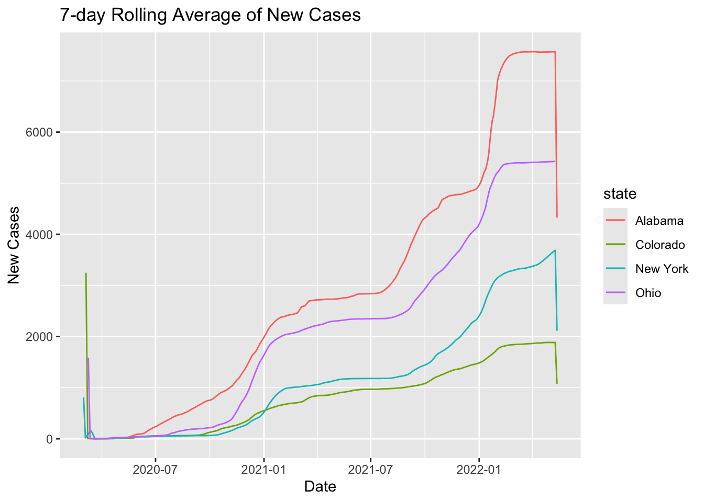
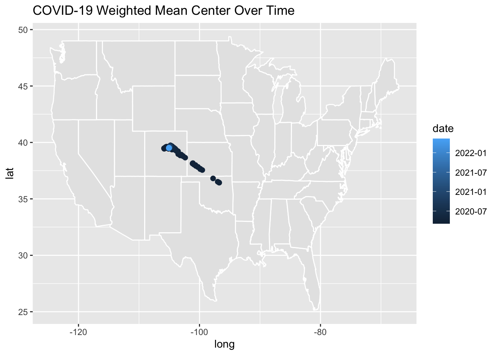
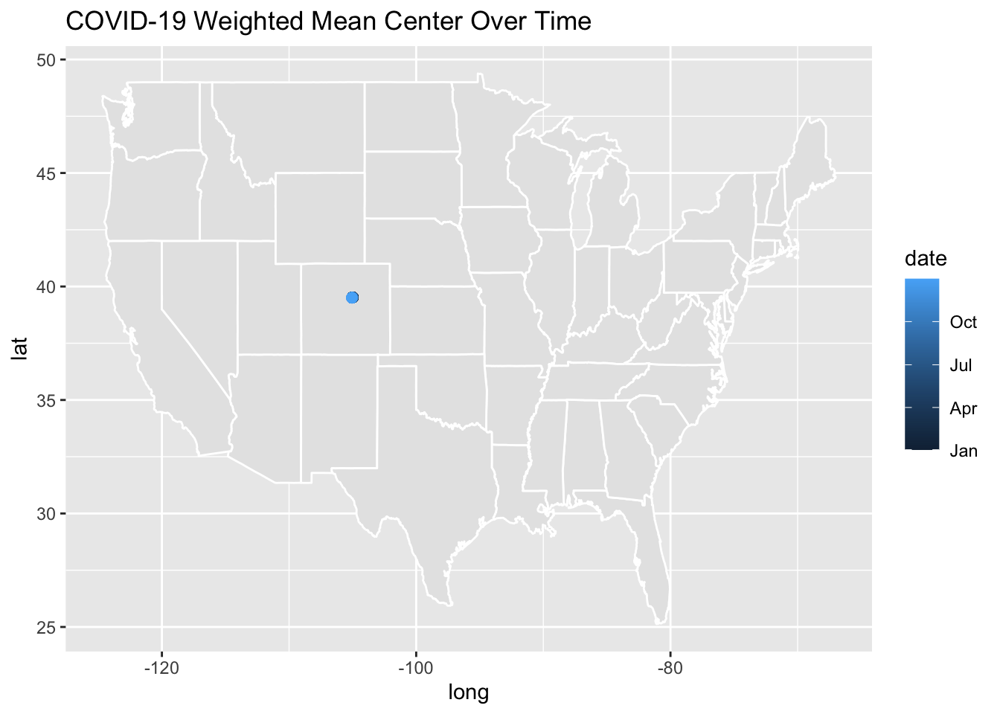
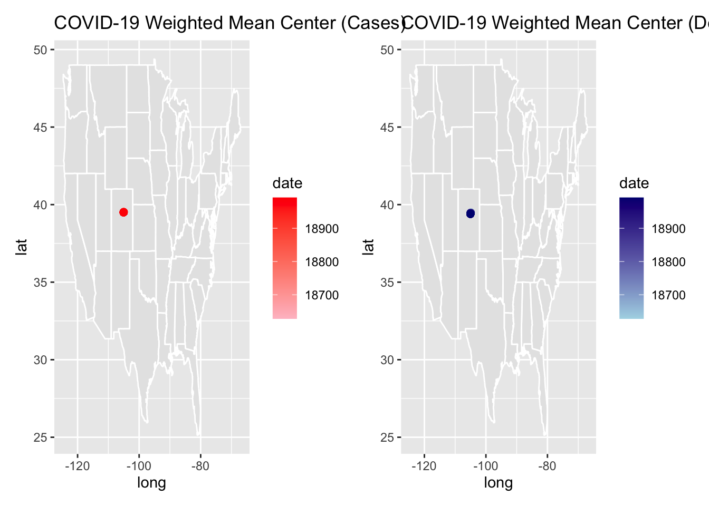

data_url <- 'https://raw.githubusercontent.com/nytimes/covid-19-data/master/us-counties.csv'
data <- read_csv(data_url, show_col_types = FALSE) %>%
mutate(date = as.Date(date))Lab 3: COVID-19
Ecosystem Science and Sustainability 330
Question 1: Public Data
Question 2: Daily Summary
Load Data
Define Parameters
my.date <- as.Date("2022-02-01")
my.state <- "Colorado"Filter and Process Data
co_data <- data %>%
filter(state == my.state) %>%
group_by(county) %>%
arrange(date) %>%
mutate(new_cases = cases - lag(cases, default = 0), new_deaths = deaths - lag(deaths, default = 0)) %>%
ungroup()Generate Summary Tables
top_cumulative <- co_data %>%
filter(date == my.date) %>%
arrange(desc(cases)) %>%
head(5)
flextable(top_cumulative) %>%
set_caption("Top 5 Counties by Cumulative Cases")date | county | state | fips | cases | deaths | new_cases | new_deaths |
|---|---|---|---|---|---|---|---|
2022-02-01 | El Paso | Colorado | 08041 | 170,673 | 1,518 | 630 | 7 |
2022-02-01 | Denver | Colorado | 08031 | 159,022 | 1,194 | 389 | 9 |
2022-02-01 | Arapahoe | Colorado | 08005 | 144,255 | 1,172 | 401 | 0 |
2022-02-01 | Adams | Colorado | 08001 | 126,768 | 1,224 | 326 | 2 |
2022-02-01 | Jefferson | Colorado | 08059 | 113,240 | 1,219 | 291 | 7 |
top_new <- co_data %>%
filter(date == my.date) %>%
arrange(desc(new_cases)) %>%
head(5)
flextable(top_new) %>%
set_caption("Top 5 Counties by New Cases")date | county | state | fips | cases | deaths | new_cases | new_deaths |
|---|---|---|---|---|---|---|---|
2022-02-01 | El Paso | Colorado | 08041 | 170,673 | 1,518 | 630 | 7 |
2022-02-01 | Arapahoe | Colorado | 08005 | 144,255 | 1,172 | 401 | 0 |
2022-02-01 | Denver | Colorado | 08031 | 159,022 | 1,194 | 389 | 9 |
2022-02-01 | Adams | Colorado | 08001 | 126,768 | 1,224 | 326 | 2 |
2022-02-01 | Jefferson | Colorado | 08059 | 113,240 | 1,219 | 291 | 7 |
Question 3: Normalizing Data
Load Population Data
pop_url <- 'https://www2.census.gov/programs-surveys/popest/datasets/2020-2023/counties/totals/co-est2023-alldata.csv'
pop_data <- read_csv(pop_url, show_col_types = FALSE)
pop_data <- pop_data %>%
rename_with(~ gsub(" ", "_", .x))
if("STATE" %in% colnames(pop_data) & "COUNTY" %in% colnames(pop_data)) {
pop_data <- pop_data %>%
mutate(STATE = str_pad(as.character(STATE), width = 2, side = "left", pad = "0"),
COUNTY = str_pad(as.character(COUNTY), width = 3, side = "left", pad = "0"),
FIPS = paste0(STATE, COUNTY)) %>%
select(matches("NAME|2021"), FIPS)
} else {
stop("Error: STATE or COUNTY column not found in population data.")
}
pop_data <- pop_data %>%
mutate(FIPS = as.character(FIPS))Merge COVID and Population Data
co_data <- co_data %>%
mutate(fips = as.character(fips))
pop_col <- names(pop_data)[grepl("2021", names(pop_data))][1]
merged_data <- co_data %>%
left_join(pop_data, by = c("fips" = "FIPS")) %>%
mutate(per_capita_cases = cases / get(pop_col), per_capita_new_cases = new_cases / get(pop_col))Question 4: Rolling Thresholds
rolling_14 <- merged_data %>%
filter(date >= my.date - 13 & date <= my.date) %>%
group_by(county) %>%
summarize(total_new_cases = sum(new_cases, na.rm = TRUE), per_100k = (total_new_cases / first(get(pop_col))) * 100000, .groups = "drop") %>%
arrange(desc(per_100k))
top_5_rolling <- rolling_14 %>%
head(5) %>%
flextable() %>%
set_caption("Top 5 Counties with Most New Cases in Last 14 Days per 100k")
top_5_rollingcounty | total_new_cases | per_100k |
|---|---|---|
Crowley | 225 | 3,923.278 |
Lincoln | 197 | 3,599.488 |
Alamosa | 596 | 3,594.909 |
Mineral | 31 | 3,336.921 |
Conejos | 239 | 3,152.203 |
Question 5: Death Toll Analysis
co_data <- data %>%
filter(state == my.state) %>%
group_by(county) %>%
arrange(date) %>%
mutate(new_deaths = deaths - lag(deaths, default = 0)) %>%
ungroup()
pop_data <- pop_data %>%
mutate(FIPS = as.character(FIPS)) %>%
select(FIPS, CTYNAME, DEATHS2021)
merged_data <- co_data %>%
left_join(pop_data, by = c("fips" = "FIPS")) %>%
filter(year(date) == 2021)
county_deaths <- merged_data %>%
group_by(county) %>%
summarize(total_covid_deaths = sum(new_deaths, na.rm = TRUE),
total_deaths_2021 = first(`DEATHS2021`), .groups = 'drop') %>%
mutate(covid_death_percentage = total_covid_deaths / total_deaths_2021 * 100)
high_covid_deaths <- county_deaths %>%
filter(covid_death_percentage >= 20)
high_covid_deaths# A tibble: 11 × 4
county total_covid_deaths total_deaths_2021 covid_death_percentage
<chr> <dbl> <dbl> <dbl>
1 Bent 30 77 39.0
2 Conejos 43 107 40.2
3 Costilla 11 43 25.6
4 Crowley 15 65 23.1
5 Custer 14 59 23.7
6 Dolores 6 30 20
7 Fremont 141 680 20.7
8 Montrose 113 532 21.2
9 Otero 77 322 23.9
10 San Miguel 7 25 28
11 Washington 15 70 21.4ggplot(high_covid_deaths, aes(x = reorder(county, -covid_death_percentage), y = covid_death_percentage)) +
geom_bar(stat = "identity", fill = "skyblue") +
coord_flip() +
labs(title = "Counties in Colorado with COVID Deaths >= 20% of Annual Death Toll",
x = "County", y = "Percentage of Deaths Attributed to COVID (%)") +
theme_minimal()
Question 6: Multi-State Analysis
states <- c("New York", "Colorado", "Alabama", "Ohio")
state_data <- data %>%
filter(state %in% states) %>%
group_by(state, date) %>%
summarize(new_cases = sum(cases - lag(cases, default = 0), na.rm = TRUE), .groups = "drop") %>%
mutate(rolling_avg = rollmean(new_cases, 7, fill = NA))
state_data <- state_data %>%
filter(!is.na(rolling_avg))
ggplot(state_data, aes(x = date, y = rolling_avg, color = state)) +
geom_line() +
labs(title = "7-day Rolling Average of New Cases", y = "New Cases", x = "Date")
Question 7: Spatial Analysis
centroids_url <- 'https://raw.githubusercontent.com/mikejohnson51/csu-ess-330/refs/heads/main/resources/county-centroids.csv'
centroids <- read_csv(centroids_url, show_col_types = FALSE)
spatial_data <- merged_data %>%
left_join(centroids, by = c("fips" = "fips")) %>%
group_by(date) %>%
summarize(weighted_lon = sum(LON * cases, na.rm = TRUE) / sum(cases, na.rm = TRUE), weighted_lat = sum(LAT * cases, na.rm = TRUE) / sum(cases, na.rm = TRUE), .groups = "drop")
ggplot() +
borders("state", fill = "gray90", colour = "white") +
geom_point(data = spatial_data, aes(x = weighted_lon, y = weighted_lat, color = date), size = 2) +
labs(title = "COVID-19 Weighted Mean Center Over Time")
Question 8: Extra Credit: Cases vs. Deaths
centroids <- read_csv(centroids_url, show_col_types = FALSE)
spatial_cases <- merged_data %>%
left_join(centroids, by = c("fips" = "fips")) %>%
group_by(date) %>%
summarize(weighted_lon = sum(LON * cases, na.rm = TRUE) / sum(cases, na.rm = TRUE),
weighted_lat = sum(LAT * cases, na.rm = TRUE) / sum(cases, na.rm = TRUE), .groups = "drop") %>%
drop_na(weighted_lon, weighted_lat)
spatial_deaths <- merged_data %>%
left_join(centroids, by = c("fips" = "fips")) %>%
group_by(date) %>%
summarize(weighted_lon = sum(LON * deaths, na.rm = TRUE) / sum(deaths, na.rm = TRUE),
weighted_lat = sum(LAT * deaths, na.rm = TRUE) / sum(deaths, na.rm = TRUE), .groups = "drop") %>%
drop_na(weighted_lon, weighted_lat)
cases_plot <- ggplot() +
borders("state", fill = "gray90", colour = "white") +
geom_point(data = spatial_cases, aes(x = weighted_lon, y = weighted_lat, color = date), size = 2) +
scale_color_gradient(low = "pink", high = "red") +
labs(title = "COVID-19 Weighted Mean Center (Cases)")
deaths_plot <- ggplot() +
borders("state", fill = "gray90", colour = "white") +
geom_point(data = spatial_deaths, aes(x = weighted_lon, y = weighted_lat, color = date), size = 2) +
scale_color_gradient(low = "lightblue", high = "navy") +
labs(title = "COVID-19 Weighted Mean Center (Deaths)")
cases_plot | deaths_plot